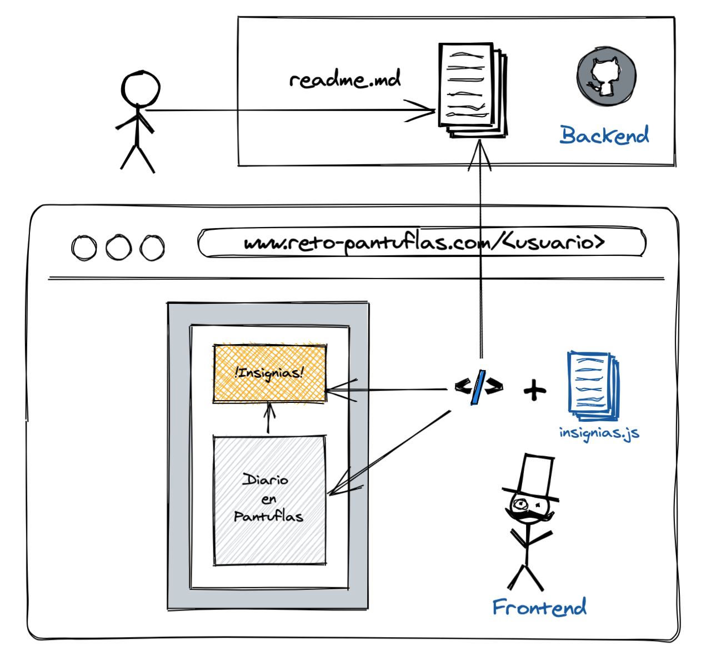

LEGO.js
El framework que llevamos dentro...
...porque las personas somos lo importante (© Daniel Primo)
¿Qué es LEGO.js?
- NO es la librería JS (que podría...)
- Está más cerca de los JUGUETES que ya conocemos
- Es un idea que ya hemos visto
- Y sobretodo...tiene que ver con CÓMO hacemos las cosas (o así lo veo yo)
Caso práctico:
La mente del developer...
!A programar un script!
¿Por qué no en JavaSCRIPT?
Nota: pido perdón a todos los sysadmin...shellscript...
Lego.js: así se empieza

!YA tenemos nuestra primera pieza!
Front para el usuario!
Veamos un poco más de código...
Lego.js: construyendo

Nuestro primer diseño, !con instrucciones!
Nos venimos arriba...
Diarios de la comunidad
Veamos si la cosa funciona...
Lego.js: Esto no me encaja...

Dudas: estabilidad, escalable...
Funciona!!! Pero... -->
Cuando la cosa crezca...
El Back al rescate!
Aunque la cosa se va complicando...
Lego.js: Todo encaja y crece

Veamos qué tal funciona...
Ojo! No nos confiemos...
Con lo que molaba el API...
Caché al rescate!

Nos para los golpes
- No saturamos al servidor
- Mejor experiencia de cliente
Invalidación - ¿Cuándo?
Uno de los 2 problemas en informática
("naming" es el otro)
Cache API
Nos permite gestionarla desde fuera:
https://www.easycron.com/https://uptimerobot.com/
API INSIGNIAS
Volvamos al problema inicial...
export function getDiaryHumour(diarioMD) {
...
return {
grinning,
neutral_face,
frowning_face,
total: grinning + neutral_face + ...
}
}
Para conseguir algo así...
[Shields.io + Insignias] API
DEPLOY API
Digital Ocean (Node.js App):
https://lego-js-vi7gr.ondigitalocean.app/insigniasVercel (Next.js):
https://legojs.vercel.app/api/insigniasTest en producción: Loader.io
GITHUB WEBHOOK + UPDATE CACHE
Caché sin TTL, sólo actualizamos cuando hay cambios
Resumen / Tips
- Lego.js = Encapsular + Conectar (y repetir, repetir...)
- Javascript "everywhere" => insignias.js
- Front+Back => buenos aliados
- APIs => es la pieza de lego "adaptador"
- Cachés: una de las dos cosas más difíciles